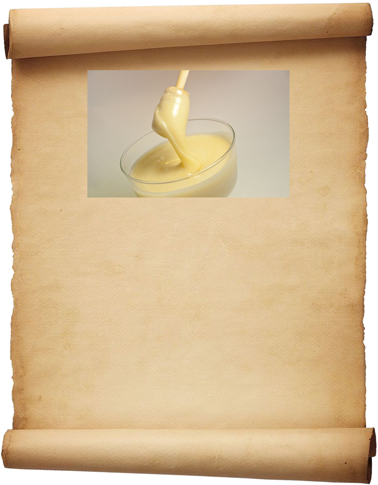

Наиболее полезным продуктом пчеловодства
является мед с маточным молочком.
Полезные свойства такого природного лекарства
интересны не только поклонникам народных методов лечения,
но и многим врачам. Исследования подтверждают
эффективность этого уникального средства в лечении
и профилактике многих болезней.
тел. для заказов 8951-495-19-49